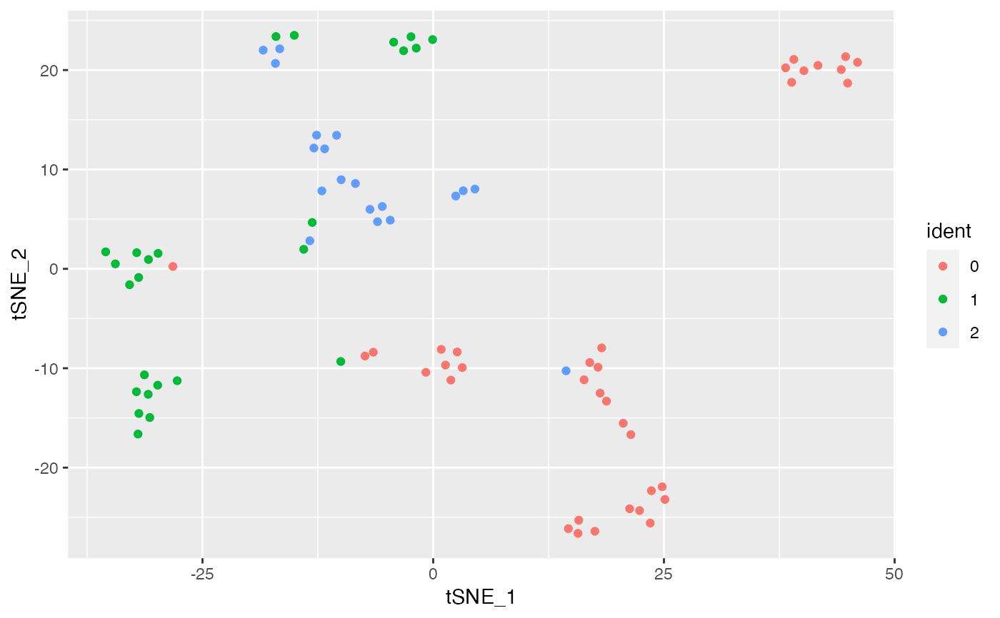
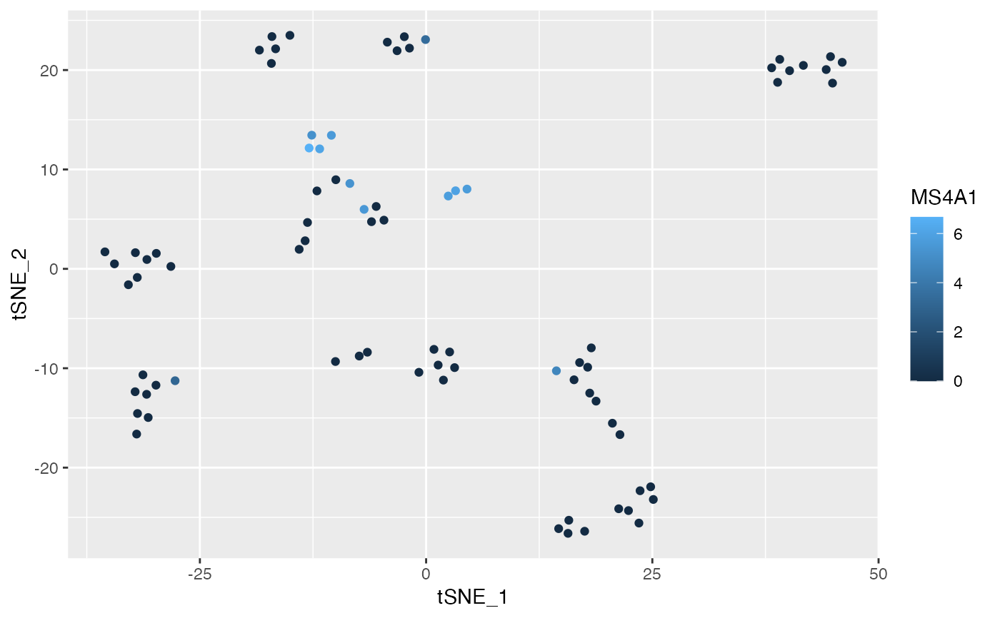

Generate a long-format data frame for ease of use with
ggplot(); as a bonus, this method enables direct
calling of DimReduc objects in
ggplot() (see examples)
# S3 method for DimReduc
fortify(model, data, na.rm = FALSE, ...)A long-format data frame for use with ggplot()
fortify.DimReduc() generates a data frame based on the
cell embeddings. Automatically creates a
column for cell names (“cell”). Also creates a column for
identity classes (“ident”) if not present in data; the
default identity class is
“SeuratProject”
; final column output
order is:
“cell”
“ident”
cell embeddings
additional meta data provided by data
ggplot2::ggplot(),
ggplot2::fortify()
Visualize Dimensional Reductions:
autolayer.DimReduc(),
autoplot.DimReduc()
data("pbmc_small")
tsne <- pbmc_small[["tsne"]]
md <- FetchData(pbmc_small, vars = c("ident", "MS4A1"))
# Create a data frame for `ggplot()`
df <- fortify(tsne, data = md)
head(df)
#> cell ident tSNE_1 tSNE_2 MS4A1
#> 1 ATGCCAGAACGACT 0 0.8675977 -8.1007483 0
#> 2 CATGGCCTGTGCAT 0 -7.3925306 -8.7717451 0
#> 3 GAACCTGATGAACC 0 -28.2064258 0.2410102 0
#> 4 TGACTGGATTCTCA 0 16.3480689 -11.1633255 0
#> 5 AGTCAGACTGCACA 0 1.9113998 -11.1929311 0
#> 6 TCTGATACACGTGT 0 3.1475998 -9.9369312 0
ggplot(df, mapping = aes(x = tSNE_1, y = tSNE_2, color = ident)) +
geom_point()

# Use a `DimReduc` directly in `ggplot()`
ggplot(tsne, mapping = aes(x = tSNE_1, y = tSNE_2, color = MS4A1), md) +
geom_point()
